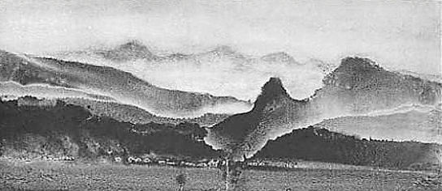
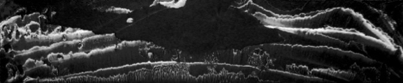
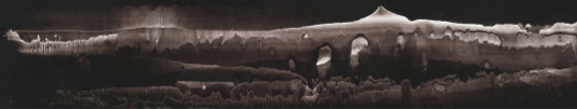
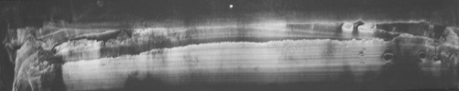
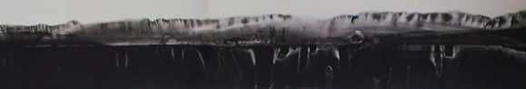
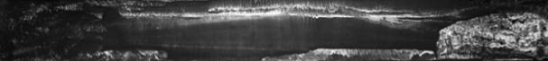
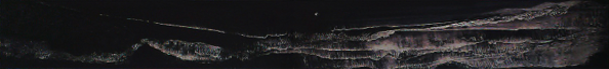

Private Dawn
Compared to Mu Xin’s literature, his landscape paintings emerge as if from another’s hand, rendering a different kind of scenery, one of pale loneliness and desolation. If it is said that Mu Xin’s literature has a target audience—a conversation with the reader and his friends—then his landscape paintings have no such audience. It has a certain kind of privacy, a space that belongs him alone.
Perhaps this is just my own perception. Twenty some years ago when I first viewed his paintings, my impression was not the same. Back then, there were many themes, even abstract ones, with varying forms. One could sense the shadows of Lin Fengmian, Cezanne, and Bada Shanren. I feel that the Mu Xin of those times had not yet formed his identity, and some of his work seemed outdated. Some time afterwards, I saw the piece he painted on his fiftieth birthday, Fifty Works Series (there are thirty-three works included in his U.S. travelling exhibitions), and only then felt the presence of something special. Looking back now, perhaps that would be the “prelude” to the landscape series in his twilight years. “Series” is a word I attached and doesn’t belong to Mu Xin’s original. I noticed an interesting phenomenon, which is this: compared to his works from the same time period that dealt with different subjects, this “prelude” possessed a precocious style. It stretched across thirty decades, and finally came to completion in his later years. I would like to discuss these paintings.
“Genesis”
The captivation inspired by visual art is always short-lived, as the human aesthetic is constantly seeking new sensations. Even works that are deemed to have a “timeless charm” will only inspire “timeless visual fatigue.” The Genesis by Michelangelo, though “timeless,” will be forgotten at some point in the future. With visual fatigue comes imagination, and even if those dreams and illusions are dashed, more will emerge in its place, shimmering with brilliance, because they know that their intrigue will not be long-lived.
Being continuously and inexplicably attracted to a certain thing and being completely enthralled and unwilling to let go—we are not strangers to this kind of experience. In regards to time, the year for the works he created on his fiftieth birthday was ’77. Are even earlier “black landscapes” included?I have yet to discover one. Mu Xin had always scorned traces, such as drafts and rough sketches, which marked the coming about of a work, often readily destroying them. Once, on a whim, he threw his own ancient poetry imitation collection onto the coals. Thus, his art could not have escaped a similar fate. His obsession with perfection drives him to purposefully erase or dilute the process in which his works came about, so as to allow his art to be pure and extraordinary. He once mentioned records claiming that Michelangelo destroyed his defects, an act that he wholeheartedly admired, saying: “That certainly requires courage!” As a result, any attempt to “origin-search” his early works is destined to fall through. This already being the case today, what of later generations? This is the shortcoming of Mu Xin’s contribution to historical painting documentation, and what are we to do about it? We can only flip through his early literature, and see what the Mu Xin of those times were like in his works, whether there are any traces left behind. In Hai Xia Chuan Sheng, Mu Xin brings up the poems he wrote when he was fourteen years-old in his hometown of Wuzhen, two of which I transcribe here:
Time is a pencil
that wrote many words on the slate of my heart
Time is an eraser
that erased those very words
Whose hand, then, holds both the pencil and the eraser
Whose hand?
Whose hand
--
The sky has a pile of toys
that no one plays with
and so it could only
play by itself
play
and be played
Then turning to “After viewing Van Gogh in Arles” written by the sixty year-old Mu Xin in New York:
…
But see upon the yellowed grass
the wolfhound chases the squirrel
The squirrel scrambles up the tree
God’s grace is displayed in all clarity
(The wolfhound turns and chases the pigeon
the pigeon beats its wings and flies away
God’s grace
is truly displayed in all clarity)
The hound in on the ground
The squirrel is in the tree
The pigeon is in the air
Van Gogh is in the museum
I am walking on the road
A certain “background color” already existed in his non-painting works. Not even fifty-years of “time difference” could change the distinct mind behind the words, words that are like a pair of eyes observing the world from two different space-times. The depth of wisdom, the amount of experience, or the lack thereof, all disappears without a trace, and become unimportant. All that is left is the certain “gaze” shimmering between the lines—truly incredible. Is it “a priori”? “Transcendental”? Let’s leave that topic for now.
In another essay, he mentions how his aesthetics regarding painting is different from others. It was called “Post-war Carnival,” a memoir-type essay written at the end of the last century, recording certain past events during his time at Shanghai Fine Arts School. At that time Mu Xin was in his early twenties, when his enthusiasm for virtual sketches had waned significantly, and instead leaned towards a more subjective and spiritual form of expression. In addition, we also learned that Mu Xin had, in those times i.e. when the Pacific War ended, had already widely and intensively came into contact with Western art, music, film, philosophy, and painting; ancient Greece, Italian Renaissance, neoclassicism, romanticism, Fauvism, Dadaism, etc., all the way to abstractionism, we can see that the China of those times, or at least Shanghai, had almost no difference to the rest of the world, or with European art, advancing at nearly the same pace. For youths with minds that hungered for knowledge, whose intellects are just beginning to take form, this influx of information and vibrant cultural atmosphere was like a showering of nectar.
“What I would like to sincerely commemorate are those nights in the library of Shanghai Fine Arts School; on the walls were large-scale Rembrandts, Delacroix’s, Chiricos, Corots, Cezannes, Van Goughs…they were occupational copies of the Western European originals—excellent execution, almost equal to the original…” In addition, “there were also large quantities of records, you can choose your favorite orchestra, conductor, and performer from the selection. For example, I bought six versions of Beethoven’s “Fifth Symphony,” and listened to the six conductors and six orchestras battle it out.
This kind of extravagance, even now, is unlikely to exist. However, I can’t help but remind myself, whether the environment or the times are good or bad have limited meaningfulness. What I mean is, countless people have passed through the School’s library and have seen the masterpieces hanging on the walls, and yet those who become great artists later on are very few in number. Thousands upon thousands of people suffered as a result of the Cultural Revolution, but isn’t it the fact that those who produced good writings because of it were very few in number as well?
Twenty some years ago, Mu Xin talked about his paintings with me over the phone, saying that he was still experimenting at the moment, and though he wasn’t quite satisfied, he wasn’t sure what he wanted. Traditional Chinese landscape paintings of the time were of good quality, especially those by Fan Kuan of the Northern Song dynasty, who was an artist that could truly be on equal footing with the Western masters. But he didn’t have many paintings, and the truly great ones were even fewer. However, those that were great were truly unrivaled, greatly exceeding the works of his contemporaries and later artists. Earlier on in art classes I took in university, I had already known of some ancient Chinese painters, like Guo Xi, Dong Yuan, and Huang Gongwang—couldn’t say I especially cared for them, these were just names to be brought up casually in conversation. However, Mu Xin was indeed serious about their work, saying that Guo Xi’s was a bit Rococo, Dong Yuan’s had a vast air about it, but couldn’t sustain more intensity, Huang Gongwang’s had variety, but was limited in its success—“My art has to be different form theirs.” I asked him different in what way, and Mu Xin said, after a brief period of silence, “I can’t say for sure now, but if I had to, then, you see, they have limited backgrounds—they’re just dallying with the same things over and over. Oh…emptiness, mistiness, elegance, etc., this isn’t nearly enough! I think I’m not the same type of person they are—this is the fundamental truth.”
“I think I’m not the same type of person that they are—this is the fundamental truth.” Mu Xin tossed this out casually, and at the time I was rather indifferent towards the statement as well. Twenty years pass, and yet these words still resound in my mind.
Some critics claim that Mu Xin’s landscape paintings have the essence of the Northern Song dynasty’s landscape art—perhaps this is true. Mu Xin has a soft spot for Northern Song landscape paintings and holds much admiration for them, but if we really can avoid “taking words literally,” we can then sense that the realm that Northern Song landscape paintings occupy is not one that Mu Xin seeks, the sort of “nomadic” and relaxed delight that make up the aesthetics of Chinese painting is far from what Mu Xin draws from. On the contrary, these are the characteristics he wants to dilute; he is using something else to take their place.

Landscape
1977
What is this something else? First, let’s discuss “privacy.”As mentioned before, compared to his written work, when Mu Xin paints, the consciousness of a specific audience disappears. When he walks from his writing desk to his drawing table, he enters a “no-man’s land.”
I have most likely never seen landscape painting that was so utterly lonely—bold in its bleakness, alive in its darkness, the ever-cold mountains, the never-ending vastness. The blackness of the night can seep into the heart, and the daylight has no power to illuminate. Taken in its entirety, it feels that this is a landscape series permeated by the color of the night—even when in the daytime, there is a sense of night hovering in the atmosphere. I also feel that with the progression of time, Mu Xin’s inner world has gradually become more melancholy. Among the collection of paintings made after the new century, there appeared a kind of profound transcendence—a kind of intention to put away his brush forever?
The art of Northern Song dynasty’s Fan Kuan possesses a permeating sense of divinity and has a certain weighty loftiness. If one places him amongst his contemporaries and the artists of dynasties before and after his own, such as the likes of Li Cheng, Dong Yuan, Jing Hao, etc., what I see are people of the same era, artists of the same era. They have a “collective aesthetic,” “collective consciousness.” Even though they each differ in form, stylistic preference, and technique, but those are just the small differences that exist under an overarching similarity. Their similarity is stronger than their individuality, and because of the collective nature of their aesthetics, their art then also tends towards “communal art,” accepted by the masses, and widely imitated. Northern Song’s landscape painters are like a towering cluster of mountains: there are the towering mountaintops, as there are gently undulating mountain ranges; the cluster of mountains closely surround the towering peaks, but the steepness of the peaks are then weakened by the presence of the surrounding mountains.
Mu Xin’s art was once heavily influence by the works of others. The interesting thing is, in later years, especially the collection of landscape paintings he created in his twilight years, the influence of others had faded away or disappeared. Yes, there is a bit of Fan Kuan, a bit of Cezanne, a bit of Da Vinci, and some Max Ernst, Oscar Dominguez, and Atoni Tapeis characteristics that existed in certain periods of their respective artistic evolutions, but the resemblances are all very subtle, intrinsic, or non-deterministic. Yes, Mu Xin especially adores Cezanne and Da Vinci; he once said himself he had been “under the influence of Cezanne for ten years,” but it is my opinion that precisely because of this, he will very consciously avoid their influence, and maintain a moderate distance, perhaps even the distance of “distant relatives.” Before Cezanne, there were various forms of Cezanne scattered across the world; afterwards those who truly understood Cezanne probably admired him from afar. Isn’t there that saying, “Hell is other people”? In regards to art, having a “clan” and banding together follows that same logic. So it seems that Mu Xin does not have a “family”—he is a lone mountain. Therefore it is not unexpected that when faced with Mu Xin, critics are at a lost of how to categorize his art, unable to find the corresponding “schools,””-isms,” and “concepts” in relation to such categorizing. Trying to determine whether he was “avant-garde” or “back-guard” was even more fruitless. New York, being the international art center that it is, with all its “schools,” “-isms,” and “trends” hardly left a trace on his landscape paintings, and became irrelevant. What I saw before me was a person, an artist, with a kind of long-lost heretical quality, and that was enough. I feel that I am not alone in this opinion.
However, at this point we have not touched upon the “private,” but rather only the “personal.” “Privacy” is wholly another level, one that is not willingly to or easily revealed. It is simple, claustrophobic, and essential. Lu Xun’s essays have this kind of layer of privacy. He mentioned in more than one instance of how he is too dark and won’t benefit anyone with his company, but his essays still allowed him to reveal some parts of himself. For me, the aspects of Lu Xun that are truly moving and have unique texture are exactly the parts of himself that are “dark” and motivated and controlled by “darkness,” displayed in works such as “In the Tavern”, “Hometown”, “Brothers”, and “Wild Grass.” Art is a strange thing; it leads you to write in one way, and entices you to paint in another. Montaigne said, I know nothing about my readers, they are people I have never met face-to-face, but I bare my heart and soul in my books, writing things that I might not even say to my friends, then hand over my book to the publishers.
The “privacy” in Mu Xin’s landscape paintings is the manifestation of the non-existence of a “target” in his inner world—it is his “honorable privacy.” He never cared back in the day, and even more so now, about what other people thought, whether they are able to understand. He can create around all types of subjects, and can put his ideas into painting without any hesitation. He no longer dressed up his thoughts like he does in his writing, nor does he split himself into many different facets. Rather, he shrinks in upon himself, as if the world and other people did not exist, sinking deeply into the crevices of his mind, a place where there is no difference in place or time, where there is only introspection, introspection that scrutinized joy, warmth, boldness, but also loneliness, isolation, and darkness. Yes, why not say it—there is also darkness, a scrutiny of his own darkness.
I forget where I read this story. During WWII, after a plane filled with children was shot and damaged, it managed barely to land on an island and lost all contact with the outside world. The night was cold, and the adults and the children all huddled into a pitch-black cave, where the children fell asleep peacefully. An adult stood near the crashing waves and thought: The darkness is not innately terrifying. If the children are told of the terror of darkness, that would be problematic. It would awaken “the darkness in the heart.” The story suddenly takes on a deeper meaning, which is: “Sensitivity” is rooted in a heart that knows darkness, if one’s heart is not “dark,” it is hard to be sensitive, and would make terror hard to come by—thus, the ability to sleep as sound as a child.
In actuality, darkness originally had no correlation to “terror.” Nature could care less about darkness; it simply exists. The morals, philosophies, and ideologies that humans associate with darkness, come from preconceptions. Darkness itself knows not about these things. Mu Xin holds Lao Zi’s world view of “absence of emotion” in high esteem, agreeing with “looking through” perspective and takes it a step further, pointing out what Lao Zi had not explicitly said, which is: Nature is indifferent towards benevolence; creatures are indifferent towards honor. Everything is but a pile of “organic” and “inorganic” matter, with no motive and no meaning. This is an even more “to the point” and “dark” way of putting things. However, if the preconceptions towards “darkness” are indeed labels that people impose upon the term, then that does not sum it up. There is something else, for example, aesthetics. I don’t know what it exactly entails, but it truly does cause people to zone out, as if there is an apparent seriousness about the matter.
The characters that emerge from Dostoyevsky’s pen all come and go in the night, going about their business in the throes of darkness—speaking, playing the piano, debating, despairing, gambling, murdering…Pushkin’s blizzard is also in the night, eloping, losing one’s way…the final battle. Gide writes in his “Oscar Wilde: Reminiscences” that one day he went to visit Wilde, and Wilde, entangled in a lawsuit at the time, was in a small pub in a depressed daze. As Gide said goodbye, Wilde seemed like he had something to say, but stopped himself. At last he leaned close to Gide and whispered, “…Ideas are formed in shadows. The sun is envious of ideas. In ancient times, ideas were formed in Greece, so the sun conquered Greece. Now, ideas are in Russia, so the sun conquered Russia…”
And yet I also have doubts about whether the attraction artists feel towards “darkness” and “shadows” is spiritual or metaphysical. It maybe very well be simply intuitive. Anselm Kiefer’s preference for “scorched blackness” and “ashen ruins” and the emotions that Ad Reinhart’s “Black Painting” stirs up in its viewers come from not only the historical and spiritual factors that critics allude to, but more so from an artist’s own affections. This kind of affection is biological in nature, and it is hard to say what implications it may have. When Kiefer talked of the monotonous color palette and the “scorched blackness “of his works, he said, “Only the French mess around with color, us Germans don’t understand this kind of stuff.” Kiefer knew that this had nothing to do with one’s sense of color, even when critics manage to draw links to the Germans’ experience with WWII, with Germany’s destruction, with some kind of spiritual or metaphysical connotation. The truth behind this matter probably can’t be put into a few simple words, but can just be called “personal affection,” and yet this has nothing to do with the whole of the German population. “Personal affection” a natural instinct, it mysteriously drives artists to immerse themselves in it for an extended period of time, teasing out imagery revolving around “philosophy,” “morals,” and“metaphysics,” and fusing all these layers of meaning into one, rendering it impossible to understand fully.The “darkness” of Mu Xin’s landscape paintings has this kind of implication and image. Let us take a look at a few works in this series of landscapes:

Waiting for the Rabbi
2000
In “Waiting for the Rabbi,” the expanse of black mountains have a hint of a smile rippling over its hills and plains; it surges upwards, but also alludes to a huge, dark flying object swooping downwards—indescribable. “Rabbi,” in Judaism means philosopher, teacher, and also implies “Jesus.” Mu Xin once said, “Great ideas are toxic. If you can resist the toxins, you will benefit from them.” Connecting this thought to Jesus and flying objects, it feels that there is a “=” sign between these two entities.

“Lover’s Grave”
1985
“Lover’s Grave” has a deep darkness, mysterious in its solitude, with a pressing coldness. The color of the night folds in upon itself; the darkness permeates the darkness.

Moon in the Water
2002
“Moon in the Water” has a certain denseness, a wild chastity. The “darkness” here differs from that of the previous two paintings. Here, “darkness” takes on the ability of “bathing” the viewer in it. Mu Xin has works with a similar atmosphere, but because of a limit in space, I will refrain from listing them individually. One can feel that Mu Xin’s creative state was superb, as if he had the gods on his side. In a world literature lecture, Mu Xin once described himself in the midst of writing, “Late in the night, there would be times when I would be in a good state, and then it would come upon me, and I scrambled to capture it. Oh, I can’t even write it down fast enough, so I can only be filled with gratitude…”

Springs Comes from Underground
2001
The “underground” in “Springs Comes from Underground,” which is towards the bottom of the painting, where it seems to be black earth, but also like a black lake, there is an inexplicable, ever-morphing “tertian atmosphere” bellowing forth. The representation and abstraction of the mountain structures are entangled and conjoined indefinitely. The metaphor of this painting, if there is one, probably comes from Gide’s Les nourritures terrestres. Mu Xin was completely immersed in this book as a young man, and never forget the teachings he gleaned from Gide’s words. Les nourritures terrestres is like the“spring” of this world, like Dionysus’s wine. Here, the meaning behind “spring” and “tertian atmosphere” overlap each other, each reflecting off of the other, forming a rich and unique meaning.
“Light on the Other Side” and “Eve before the Battle” were both created in 2002. Majesty, amazement, fear, vastness, barbarism, heroism, and compassion, all blend into one. It reminds of Wagner and the prelude of his “Tannhuaser” and “Parsifal” (and here I can’t help but think of how Mu Xin and Wagner have a similar appearance—his phrase “that fellow, walking over all Wagner-esque” perhaps is actually a “self-portrait?) Post-modernist art abandoned the use of the “grand narrative”, seeing it as a relic from the past, vague and out of fashion. Mu Xin’s landscape painting is still a “narrative,” however, it is not narrating a concept, but narrating a person’s psyche. The type of narration is precious and rare at any given time, it incites us to once again meditate upon what art really is.
Compared to his literature, Mu Xin’s landscape paintings seem to be missing something we were familiar with—perhaps it is a kind of “sprite of elf? The Mu Xin within his literature has a sharp and agile mind, especially the thousands of short phrases that sparkle amidst his writing, forming a dazzling grand view of the world. But in landscape painting, that sprite disappeared, nowhere to be seen, or morphed into another form, emitting a different sound wave? Something akin to a biblical voice?

Light on the Other Side
2001

Eve before the Battle
2001
This one,"Untitled", is quite abstract, the date is unknown, and I haven’t seen the original, nor could I find the name of the painting. Prior to this painting, the composition of the paintings have all been width-wise, with a length to height ratio, some even nearing twenty-five or six to one, like “Afternoon” (its width makes it inconvenient to post in this article). For the long Chinese painting scrolls that use “scatter perspective,” this ratio doesn’t count as extreme. It can be ever longer, even to infinity, allowing the length of the painting to take on a game-like quality. The perspective of Mu Xin’s landscape paintings often uses the Western focal perspective. Thus, the twenty-five or six to one ratio is already the furthest he should go. Any longer, and the energy of the painting would be cut off. The unconventional ratio of his paintings creates an oppressive and intense horizontal tension, forming a vast and bold ambiance, much like the expansive, dignified quality of operas and symphonies, a quality that perhaps contradicts the afore mentioned game-like quality. This abstract painting is almost a square, and compared with other landscape paintings, it feels crude and savage, almost a little evil. Mu Xin has created many similar “textured” paintings around the early 90s, also purely abstract and geometric, sharp and sinister, rampant and lonely. Those paintings ran along the same veins as this one, like an abrupt branching off of the main body of Mu Xin’s landscape paintings, a strong note amongst the “discordant” ones. It reinforces, echoes, and enriches the “trunk,” making the entire inner structure of the series stronger.
Untitled
I had mentioned before the “prelude” of Mu Xin’s series of landscape paintings had already possessed the qualities his paintings took on in his twilight years. This is an unexplainable phenomenon—is it memory? A priori? No one knows. Either way it doesn’t have much to do with a person’s real-life experiences, rather, it is a comfortable, autonomous spirituality. Remember the poem he wrote when he was fourteen? That type of metaphysical contemplation comes from the pen of a youth who lead a secluded life in his hometown of Wu Zhen, never having traveled far from home, or even went out to shop. The youthful air of its language had yet to fade, but the mind of the writer had already entered ever-deepening twilight. In the literature and landscape paintings that followed, there were often warm, magnificent, and clear skies, but another kind of more profound and weighty spirituality coexisted, and continued to expand and meander outwards. This inner quality, for his literature and especially the works he wrote in his twilight years, is diluted by his calm and exquisite words, like the rising sun reflected upon the cold surface of a wintry ocean. However, in his landscape paintings, this spirituality had already found its way into the niches and crevices of the mountains and plains. As the artist entered his later years, it became richer, deeper, more straightforward in nature. I think they were Mu Xin’s last words.
Gide says that Goethe is a semi-plateau, semi-plateaus received an abundance of precipitation and boasts verdant vegetation, but highlands—highlands are desolate and barren.
“I see a new sky and new land.”
Ba Long “Evening Post on Five Islands”
Now let’s discuss “creation method.”
As afore mentioned, in his early days of art study, Mu Xin had a liking for subjectivity and reconstructive art, and didn’t like realism or representational art, but always praised the realist art of ancient Greece, Da Vinci, Michelangelo, and Botticelli. Lin Fengmian is a mentor Mu Xin grew to respect in his youth and continued frequent contact with for forty or fifty years. Later in “Dual Mourning,” Mu Xin spoke of him with great admiration, praising Lin’s work of a certain period, saying that it was the best work he ever created, and this “best work” was also realist.
Mu Xin’s paintings had also experienced an abstract stage, but never abandoned realism. The landscape paintings of his twilight years are mostly realist, but the elements of abstraction are stilled strewn throughout. This revealed a paradoxical nature. America’s abstract expression artists like Franz Kline and Julian Schnabel, etc., all had a similar “swaying period.” What is different between these artists and Mu Xin is that the former all eventually veered towards abstraction or realism. Mu Xin’s “wavering” is perhaps because of his extreme sensitivity to as well as a deep understanding of both types of art. He once jokingly said, “My style is having a variety of styles.” He knew that the “god” of art held no prejudice towards “types,” and also understood that god wouldn’t put all his “gold coins” in one pocket. Furthermore, I think that “wavering” itself brought Mu Xin something else that was much more important to him, and that is freedom. This is why even in the works in his later years, abstract and realist elements coexisted on the same stage, becoming a mesmerizing factor in his paintings. Big rivers all have multiple sources and never cease to flow. It is Mu Xin’s “poetic nature” and personality that renders him unable to stay in one place for long. He must use a unique technique to express the landscape of his inner world, and the technique he chose was transfer painting.
With Mu Xin’s keen sensitivity, it would be natural for him to engage in many experimental ventures, so why did he set his sights on the transfer painting technique? Besides environmental factors, there are also psychological reasons. Mu Xin has a very rational side to him, which is manifested in his writing from his dismissal of surrealist and stream of consciousness techniques. Although he agrees with “the incidental, absurd, and subconscious,” but he puts more emphasis on an artist’s conscious awareness, as well as the “quenching” and “intoxicating” abilities of words. And yet, transfer painting is a kind of special technique in the sense that it is full of the “incidental,” “accidental,” and “irrational.” Modification is very taboo, and yet Mu Xin not only chose to use this technique, but used it for several decades, becoming a master of this form of expression.
I suppose there is the complementary nature of “literature” and “painting” at play here. In literature, Mu Xin compares himself to an elf—an elf is witty, sentimental, wise, and curious, but an elf does not befuddled. Reading Mu Xin’s text, one can feel that he knows well the way of the world, has a distinct clarity of language, and impeccable inner logic. However, in the creation process of his paintings, there arose this kind of scenario: he no longer new exactly what he wanted to do, becoming a bit hesitant, losing the control he exhibits in his writing, blundering about, sometimes resulting in “failures.” Even though those accidental occurrences all “succumbed to fate” in the end, they allowed this landscape series to become varied and no-consistent in terms of patterns, imagery, and creation tactics. We can see these characteristics in “Premonition,” “Devil’s Garden,” “Snow and Fountain,” and “Sun and Wind.”
These are precisely the characteristics belonging to transfer painting. Rationality, control, preconception are often ridiculed by this technique. The artist loses their way in the creation process of almost every painting, “chaos” emerges frequently, and “accidents” happen all the time. In these moments, the artist must resume control, make the best of the circumstances, and reorder the image. I once discussed a Dadaist poet of the last century, Tristan Tzara (1896-1963), with Mu Xin. This poet created his poems by cutting out many words and sentences from newspapers and magazines, then scattered them on the table and picked out individual pieces one by one, randomly arranged them, and called them new poems. I had thought that Mu Xin wouldn’t be too into this type of thing, and was surprised when he praised this technique, saying that poetry comes from chaos, operating under a whole other set of rules, and if you forced yourself to write, you would fail. Whether or not Mu Xin would employ the same technique in his paintings is deemed unlikely if one gives some thought to the notion, but the characteristics of the transfer painting technique he chooses to use to create his work coincides with the Tzara’s technique. I feel there is rarity and exoticness to certain aspects of Mu Xin’s landscape paintings, which is derived precisely from the accidental, which becomes wholly natural under the control of the artist. Some parts of his paintings where he “lets loose” are truly out of this world. They not only make me feel as if I will never know the full extent of Mu Xin’s capabilities, Mu Xin himself probably has similar realizations of himself.
China’s traditional culture is passed on through imitation. The saying of “for every word there is a basis, every stroke a reference,” in the long run fosters an attitude of detachment, apathy, and even hostile attitude towards the unfamiliar, the eccentric, and the shapeless. This is the tragedy of an ancient country. China’s landscape art, after reaching its peak in the Northern Song dynasty, inevitably declined. The profound solitude found in the landscape paintings of the Songs turned sour from the ceaseless imitation of later generations, becoming lifeless, and yet still regarded as a kind of “Chinese identity,” and revered by many. The Qing then came up with some kind of “pattern book,” which then became the long-standing sketching blueprint for artists. I can’t be sure if the Songs had a similar kind of “pattern book,” but have knowledge of the widely known “Chieh Tzu Yüan Pattern Book” that sprouted from a barren time for Chinese painting and Chinese civilization. China hasn’t had a master of landscape painting in a long time. In fact, there’s no right or wrong to the ways of teaching Chinese traditional painting, humans are the key to the problem. The “modes” and the “routines”—didn’t our predecessors create them? But later generations, being incompetent, made them into “default,” stubborn as mortar. Ever since then, no genius has flowed forth from the brush. I feel the thing that Mu Xin doesn’t want to adapt to and wants to overturn is not the “mode” or the “routine,” but rather the mortar in people’s hearts. Mu Xin once said, “The best way to inherit a tradition is to overturn it.” Have we encountered such straightforward and precise words elsewhere?
The transfer painting technique allows for the subconscious to become “conscious” and “material.” From what I understand, the first to use this technique was Spanish painter Oscar Dominguez. His creational peak was in the 1950s and 60s, but wasn’t very famous. Even when China hadn’t locked its gates or in the midst of the Cultural Revolution, it was unlikely the people would come across Dominguez’s work. However, during the period of the Republic, Mu Xin had the opportunity to see the work of German artist Max Ernst. He is another artist who employed the transfer painting technique, but he used oil-based products, which had nothing to do with the special water-based formula the transfer method uses as a medium. Thus, Mu Xin’s technique was one that he figured out himself.
According to Mu Xin, the “smallness” of his earlier paintings as well as his choice to use the transfer method was due to humble conditions and convenience of use. During the cultural revolution, ink, pens, and paper were “lawful tools” to write up inspections, accounts, and ideology reports, and glass panels were also easy to get. What needs a special mention is that even though black ink is the only “color” Mu Xin can write his “inspections” with, and will never go out of stock on the market, one can fathom from the works that were created thereafter that “black” is his “specialty” color of choice when it comes to aesthetics.
Yet, the limits of the transfer painting method are extremely obvious. It is completely unsuited for large-scale works. It will very likely become scattered in composition, and the exquisite quality of the watermark mechanism will be greatly reduced. But Mu Xin had long since wanted to create huge productions. One day, probably in the late ‘80s, he and I were strolling along a street in downtown Manhattan. When we came passed in front of an old wall that was eight or nine stories high, he stopped, eyeing the mottled traces on the wall, softly whispering his amazement at what a wonderful abstract painting it was. After gazing at it for some time, he said, “One day I want to paint something like this, exactly this big!” He looked like he was serious, and was in high spirits on the way home. The works Mu Xin produced in his later years were vigorous and expansive, suitable for going more large-scale. Once made larger, it would almost definitely present a fuller, more powerful Mu Xin. But because he was limited within the bounds of the transfer technique, these hopes can only become regrets. However, in reality, the transfer painting method limited Mu Xin, but also paved the way to his achievements. What set Mu Xin apart from everyone else is his ability for impeccable execution to the within constraints. The kind of impeccable execution made me forget the limits in which they were performed, made me forget the era that was so sinister, unconducive to the arts, and even threatened the survival of artists.
During the days of our interaction in New York, I once brought up the closed-off nature of China in the 70s and 80s with Mu Xin. Mu Xin said that the art collections, books, and records purchased before 1949 were later all taken away by the rebels. Afterwards, music, along with some European and American musician’s tunes, was secretly circulated on old Bakelite records, which was done in thief-like stealth, and was hard to pull off on a regular basis. The occasional Cezanne and Malevich were given to him by his young friends, who tore them from magazines. “It’s like old friends reunited!” he said delightedly at the time.
It is impossible for us to imagine how Mu Xin, in a little room situated under a large bridge by some farmland in Shanghai, held somewhere in an urban prison house, in the alleyways of a crowded, putrid, clamoring neighborhood, came to create such spectacular, vibrant paintings. I can almost see the gloomy room, windows and doors locked, curtains drawn, the din of people outside still managing to penetrate. Inside, the paper is already spread upon his drawing table, the battle of ink commencing with grandeur, singular and agile formations of mountains, water, wood, and stone leap forth. The arranging of imagery, the weaving of space, the formation of light and shadows manifest in unique and varied ways. –I see Mu Xin’s “genesis.”
There are approximately two types of artists, one is the fashion artist, and the other is the “individual” artist. The former creates fashion, transforms fashion, and produces the “public opinion,” creates and guides the “collective consciousness,” cares about whether he is still “avant-garde” or “on the cutting edge,” whether they will continue to be “the leader of the times,” and whether they will be able to express the “spirit of times” in a timely manner. In the eyes of these artists, concepts are more important than people. Their art may attract people, but has difficulty winning their hearts. The latter adhere to their own beliefs, and don’t really bother themselves with what is fashionable. They stand on the sidelines, ridiculing the collective consciousness, valuing their own existence. They are self-centered in a lonely way, having lived as an outsider for a long time, they labor away behind closed doors. Perhaps, they don’t have to illuminate anything, yet can’t help but “set themselves on fire,” or shine with a light of their own, or fade into the darkness. This type of art may not be attractive, but could win people’s hearts.
It has been two years since Mu Xin’s death, and when I think of him, I think of a traveller of the night, his spirit eternally glowing, never tiring, walking farther and farther in the realm of his landscapes…
I wish I could transform into night
And yet, I am the light
Mu Xin “Night Song”
Liwei Cao
Translated by Vanessa Cao
2014.2 Hangzhou